3. Signal Analysis¶
Acquiring intracranial recordings allows the possibility to analyze how the brain activity changes across different moments and locations. To properly study how the characteristics of the intracranial signals and oscillations change, several tools can be used. These changes are visible in the different domains: time, frequency and time-frequency, for which NeoDBS is fully prepared to analyze.
Signal analysis methods and tools have to be fine-tuned to the acquiring conditions so conclusions can be made with precision and certainty. However, for users with no background or knowledge in signal processing, this task can turn out to be very difficult.
Therefore, NeoDBS took an effort in creating robust pipelines that can be used by every user, researcher or physician, without any in-depth knowledge. To access these prepared methods, access "Default Signal Analysis", under the header "Signal Analysis".
Nonetheless, signal analysis parameters can be fully customized to the researcher's needs. When customizing the parameters, the user will be aided by the documentation and default parameter's values, as seen in the following picture. To access the customizable methods, access "Customizable Signal Analysis", under the header "Signal Analysis".
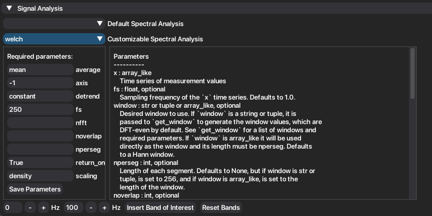
NeoDBS offers the following signal analysis tools for time-domain signals, both on the default and customizable pipelines:
- Power Spectral Density (PSD) Estimation
Periodogram
Welch PSD
DPSS Multitaper
- Coherence
Welch Coherence
Multitaper Coherence
Cross-Correlation
Spectrogram
Wavelet
Coherogram
Phase-Amplitude Coupling
3.1. Spectral Band Analysis¶
Signal processing and analysis relies heavily on the study of the spectral component of the signal. Beyond the classic frequency bands of neural signals, researchers also have a need to study how specific and unique frequency bands behave.
The default bands are: Delta (0.1-4 Hz), Theta (4-8 Hz), Alpha (8-12 Hz), Beta (12-30 Hz) and Gamma (30-100 Hz).
To further enhance spectral analysis, the user can add more frequency bands to be included in the analysis. The minimum interval for the frequency band is 2 Hz and can be added using the following buttons:
In the respective recording mode tab, open the collapsing header named "Signal Analysis".
Fill in the respective input spaces for the bounding values of the new frequency band.
Press "Insert Band of Interest", to add the new band.
The added band will be included in future spectral analysis inside the respective tab.
The user can add multiple bands.
To reset to the default bands, press "Reset Bands".
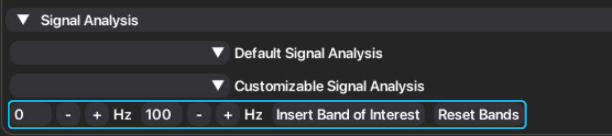
The current bands can be consulted by hovering the "Insert Band of Interest" button.
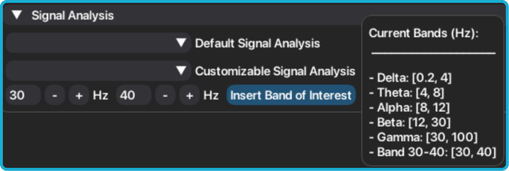
3.2. PSD Estimation¶
Analyzing the frequency component of signals is a very important tool when researching brain activity for biomarkers and neural signatures. Brain activity is characterized by rhythmic oscillations, whether in several important processes, like sleep, or by communicating within different regions and neural populations. It is crucial to look at how the energy of these oscillations changes in different moments. Using PSD estimation we can see how the power of each frequency differs.
The available PSD estimation methods present all the same information, with different time and spectral resolutions, which can be beneficial to different tasks or research goals. You can find a more detailed explanation in: https://www.mathworks.com/help/signal/ug/nonparametric-methods.html.
Under the "Signal Analysis" header, choose between default or custom signal analysis.
Choose which PSD estimation method you want to implement: Periodogram, Welch or DPSS.
If you chose custom analysis, fill the required parameters and press "Save Parameters". Then, press "Plot filtered signal".
A new child tab will be created, under the name of the method employed, with the result of the analysis and extracted features.
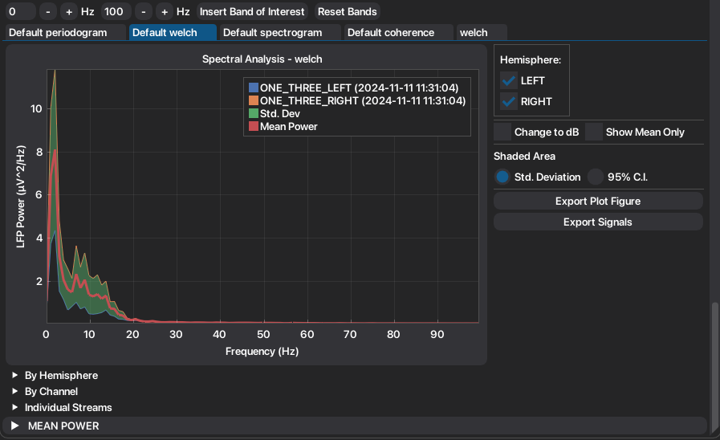
Mean and standard deviation are recalculated with every signal toggle.
To convert the PSD between original units and dB, toggle "Change to dB".
To show only the mean PSD, and respective standard deviation, toggle "Show Mean Only".
The standard deviation can be converted to the 95% Confidence Interval, by choosing in the radio button under "Shaded Area".
Automatically extracted features are organized into convenient groups, to facilitate visualization and exportation of features.
Plots, signals and tables can be easily exported.
Note
Changing units in the plot, will also convert the extracted features in the tables to the choosen units. Standard deviation may appear with negative values when converted to dB, but for statistical purposes must be considered as positive. The negative signal is kept for proper conversion to the original PSD units. Additionally, when the plot only shows the mean series, conversion of units is disabled. To convert units, deselect "Show Mean Only" checkbox.
3.2.1. Band Power Over Time¶
When more than one recording from the same channel is present (when employing the PSD method), the user can see how the mean power of each frequency band changes over time.
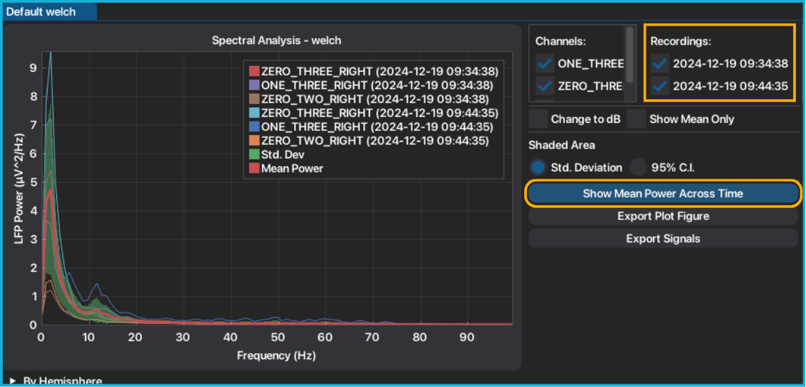
Press "Show Mean Power Across Time".
The mean power per band, per channel, is plotted. The respective dates are indexed on the right side of the plot.
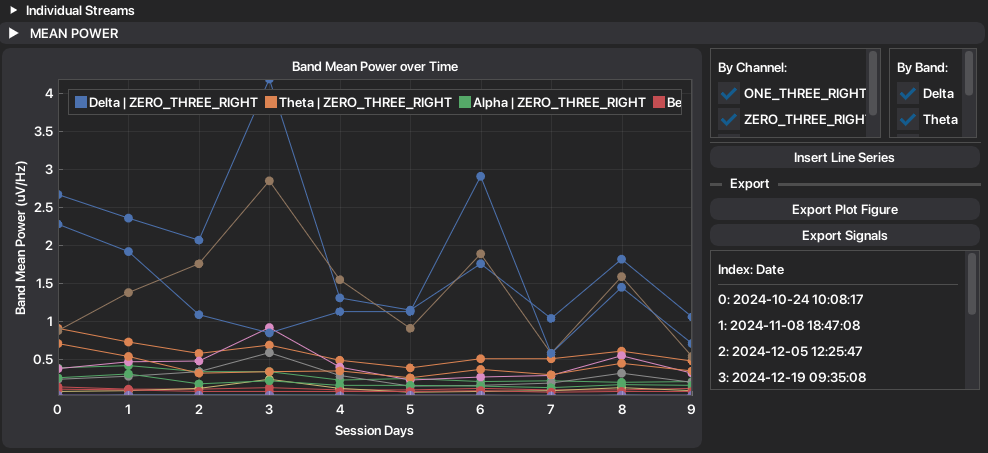
If you want to add an external information, press "Insert Line Series". This will accept an txt file, with the following structure: first line is the label of the series, and every line stores the value of each time point.
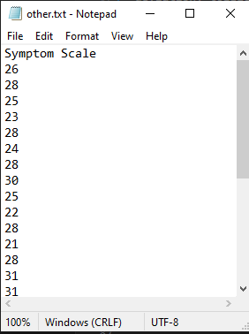
The inserted series is plotted on secondary axis allowing the user to zoom and move around the inserted values independently from the mean power.
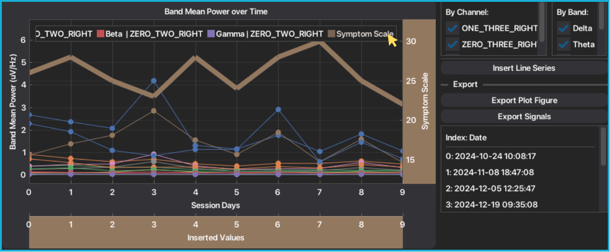
You can insert multiple line series, although it is not recommended.
3.3. Coherence¶
Coherence is a frequency-domain measure that quantifies the degree of linear synchrony between two signals at a given frequency. It is commonly used to study functional connectivity between brain regions or neural populations.
Coherence values range from 0 to 1, where 0 indicates no consistent linear relationship at that frequency, and 1 indicates perfect linear coupling between the signals.
In addition to standard coherence, Imaginary Coherence is often computed. This measure captures only the imaginary (phase-lagged) component of coherence, effectively excluding zero-lag interactions. As a result, it is more robust to volume conduction and common source artifacts, and it better highlights genuine functional connectivity between channels.
Under the "Signal Analysis" header, choose between default or custom signal analysis.
Choose which coherence method you want to implement: Coherence (Welch) or Multitaper Coherence.
Select which combination of signals you want to analyze. After, press "Plot Coherence".
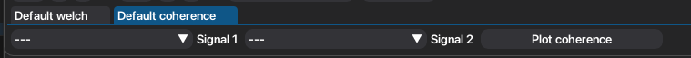
Both Absolute and Imaginary components of coherence are plotted and features are automatically extracted. Features are organized into tables.
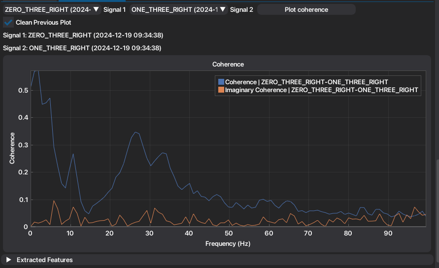
To plot a new coherence, repeat the process from step 3. If you want to maintain the previous computed coherence plotted, unselect the checkbox "Clean Previous Plot".
If you selected the Multitaper Coherence, you can also compute the coherogram. Check more in here.
Plots, tables and signals are easily exported.
3.4. Time-Frequency Domain Representation¶
To compute Time-Frequency Domain (TFD) representation, NeoDBS is able to compute the Welch Spectrogram or Wavelet, available on both default and customizable pipelines.
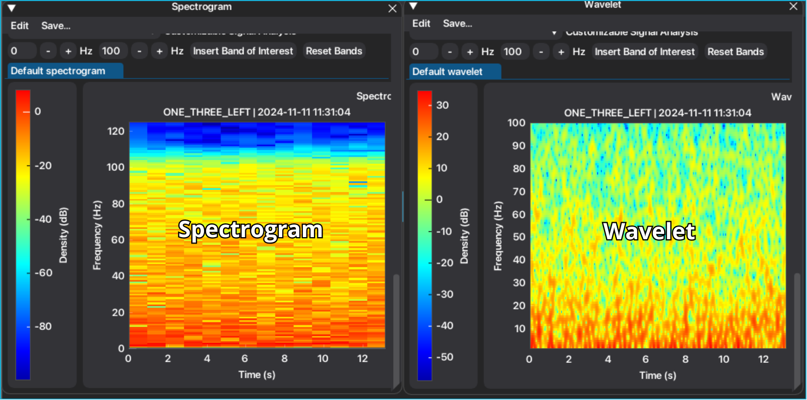
In the Individual window, it allows for spectrograms to be computed per signal or to join recordings (if there are multiple recordings from the same channel). Additionally, if there are any marked events, those will also be automatically included in the representation of the spectrogram.
In the Combined window, spectrogram is only available for event-locked segments (after inserting events).
Warning
Since computing time-frequency domain representations has a high computational cost, it is advised to perform this method on smaller segments, or to properly account for segment duration when customizing spectrogram parameters. Number of computed time-frequency domain representations also highly impacts the computational performance. In default wavelet, due to its high time resolution characteristics, an adaptive downsample is applied considering the length of the signal.
1. After selecting the "Spectrogram" method, the plot and respective buttons will be displayed. In the figure below we can see the example of the spectrogram being computed on an Individual window with marked events.
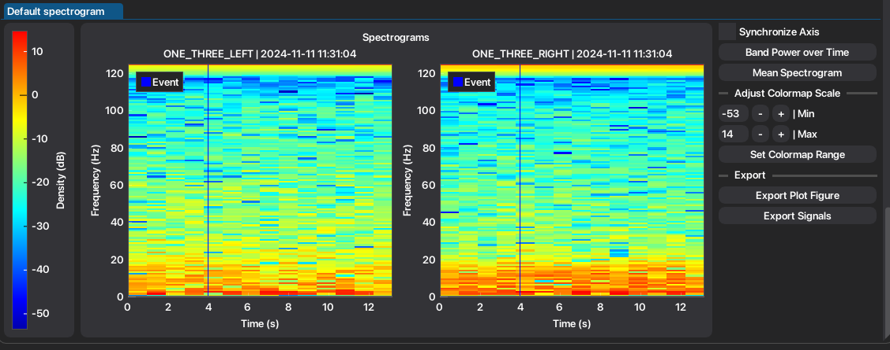
If more than you recording per channel is visible, the user must select between joined or separate spectrogram of the signals. By pressing the "Joined Recordings", the spectrogram will be computed for the joined recordings by channel. Else, if you press Separate Recordings an individual spectrogram will be computed per recording.
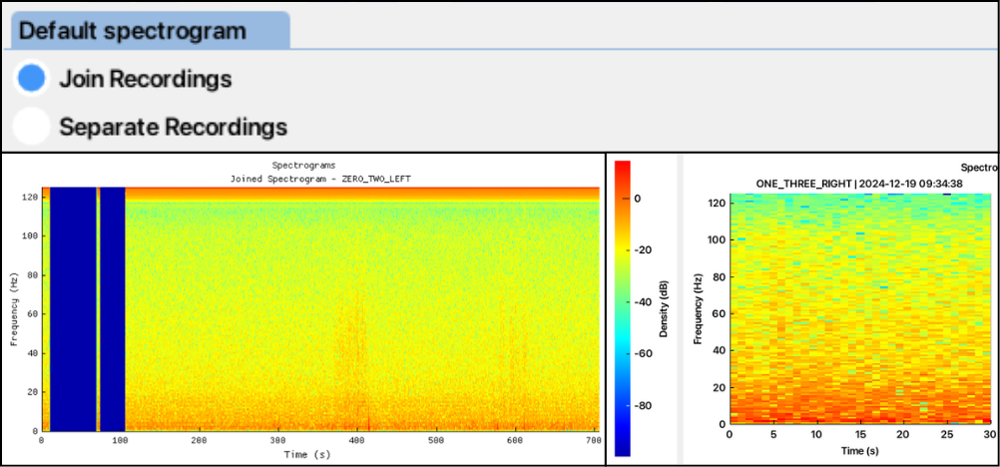
Toggle "Synchronize Axis" to synchronize axis between plots.
To plot the band mean power over time, per recording, press "Band Power Over Time". See more in here.
To compute the mean spectrogram, press Mean Spectrogram. The mean spectrogram and respective buttons will appear under the collapsing header named "Mean Spectrogram".
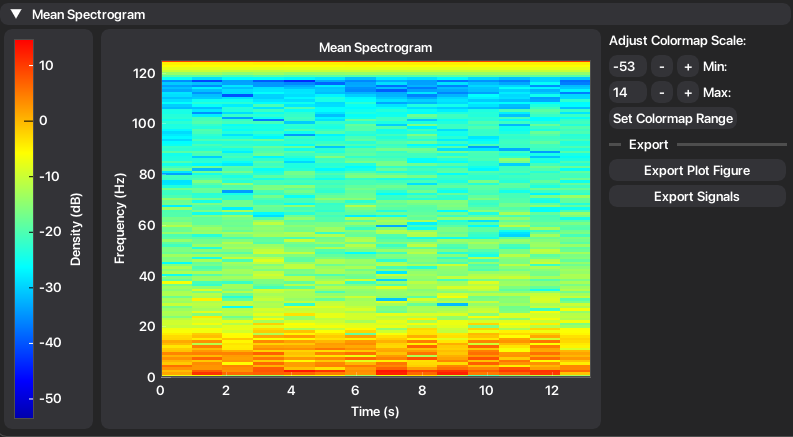
Warning
Mean spectrogram will only be computed if all signals have the same duration. Else, a warning will apear.
To adjust the colormap scale of all the plotted spectrograms, define the minimum and maximum values of the scale. After defining, press "Set Colormap Range".
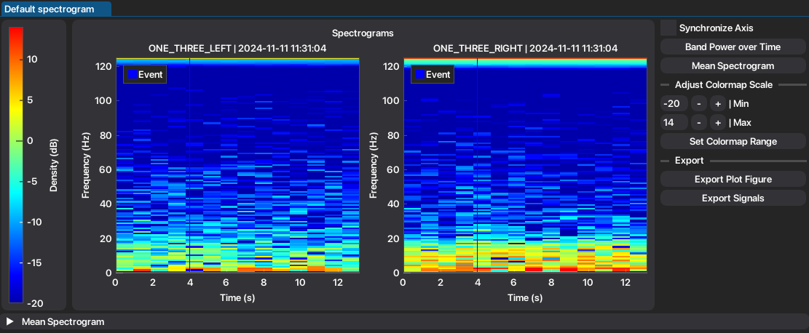
Exportation is facilitated in the respective buttons.
3.4.1. Band Power Over Time¶
By pressing the "Band Power Over Time" button, the mean power of each frequency band will be extracted and plotted per recording.
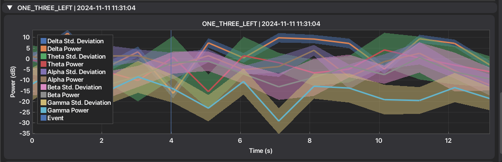
3.5. Coherogram¶
When selecting the Multitaper Coherence, user may also compute the coherogram, by pressing "Plot Coherogram". Exportation of all signals, plot and tables is facilitated by the respective buttons.
This a very useful tool that allows to check how coherence between signals and frequencies change over time. However, coherogram does not mark inserted events as spectrogram does.
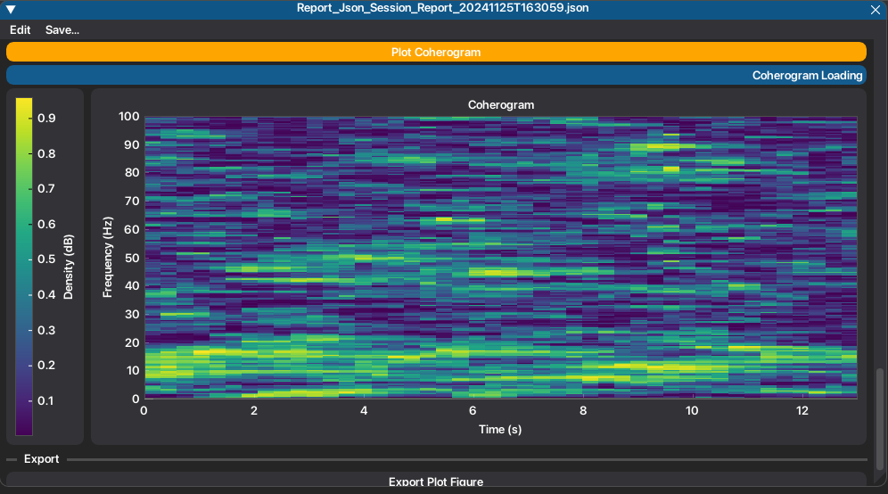
3.5.1. Band Coherence Over Time¶
Additionally, band coherence over time is also computed automatically, in simultaneous with the coherogram. It can be accessed under the collapsing header "Coherence over time". Exportation is also facilitated.
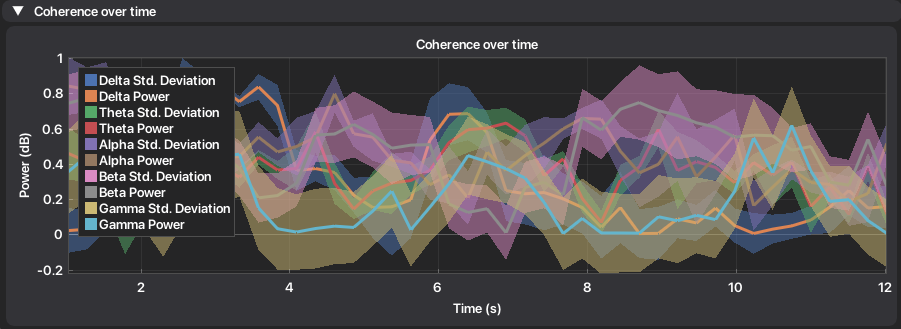
3.6. Phase-Amplitude Coupling¶
Phase-Amplitude Coupling (PAC) is a cross-frequency coupling that allows to observe modulations, or coordination, between the phase of a signal with the amplitude of the second signal. It is typically used to analyze the modulation between low-frequency phases and high-frequency amplitudes, reflecting interactions across different time scales (band frequencies) and spatial locations. To quantify the degree of coupling, the Modulation Index (MI), proposed by Tort et al. 2010, for PAC analysis of neuronal signals was calculated. MI is calculated as the normalized difference between the maximum possible entropy and the observed entropy, with 0 corresponding to no coupling and 1 to strong coupling.
Under the "Signal Analysis" header, choose between default or custom signal analysis. Then, select "PAC".
Select the signals to be analyzed, in Signal 1 and 2.
Select the frequency bands to be analyzed, respective to the signals. From signal/band 1, the phase will be extracted. From signal/band 2, the amplitude will be extracted.
Once all parameters are filled, press "Plot Phase-Amplitude Coupling".
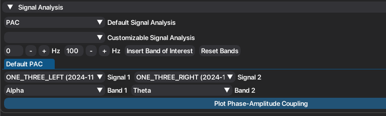
The respective representation of PAC will be displayed, as well as the extracted features.
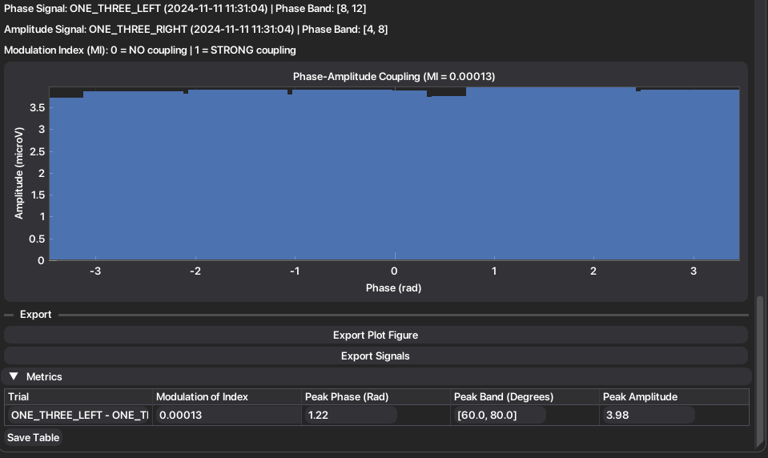
To compute a new pac, repeat the process since step 2. New metrics will be added to the table.
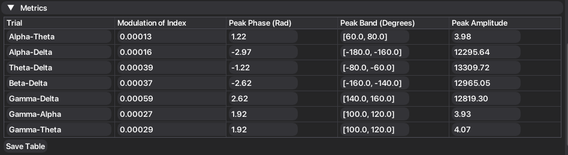
Exportation is also facilitated.
3.7. Cross-Correlation¶
Cross-correlation (CC) is a powerful tool that can reveal synchrony or coupling between two different signals across time. It is typically used to study functional connectivity across different brain locations. It is a normalized dimensionless metric, with 0 corresponding to no correlation between signals and 1 representing maximum correlation.
Half Max (HM) correlation and width (HMW) enables the investigation of the spread and periodicity of the correlation. HMW is calculated through the intersection of the correlation signal and HM. Narrow HMW represent very precise temporal coupling, which may be a reflection of pathological coupling or over-synchronized frequencies. For further offline feature analysis, the root mean square (RMS) correlation is extracted, to cancel out symmetric signals, while still representing the mean correlation across time. The maximum correlation, and respective lag, are also extracted.
Under the "Signal Analysis" header, choose between default or custom signal analysis. Then, select "Cross-Correlation".
If you want to compute CC per frequency band, toggle "Band Cross-Correlation". Else it will compute CC for the entire spectrum.
Select the signals and press "Plot Cross-Correlation".
The computed method and extracted features will be displayed.
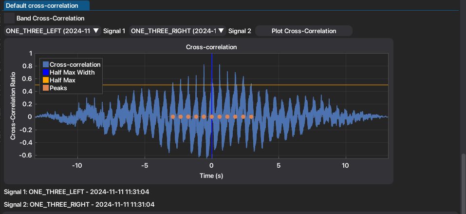
New extracted metrics will be added to the table. Toggling buttons appear to aid in visualization and exportation.
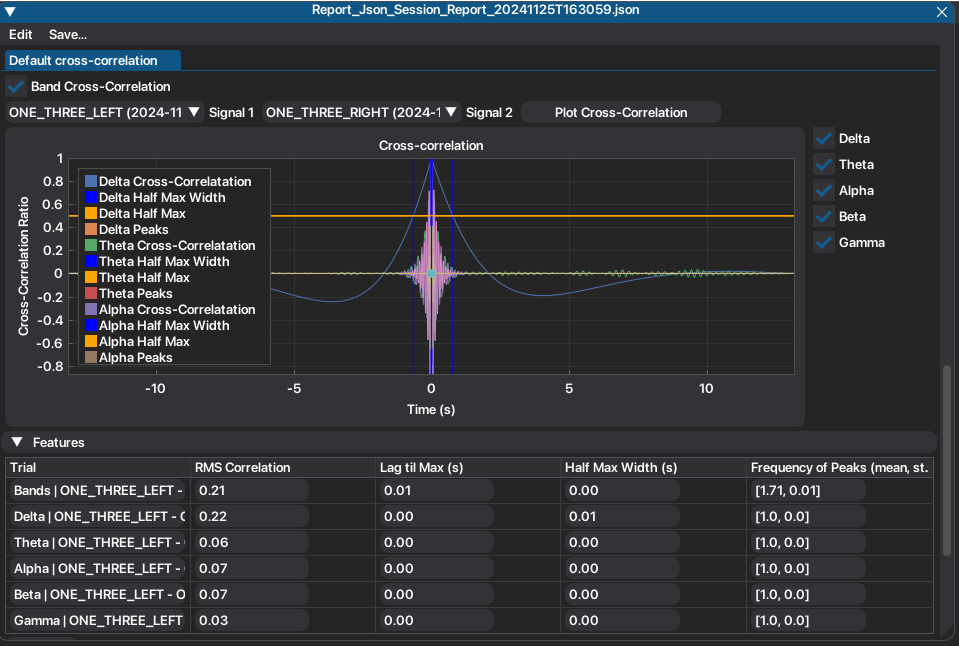
Exportation is also facilitated.